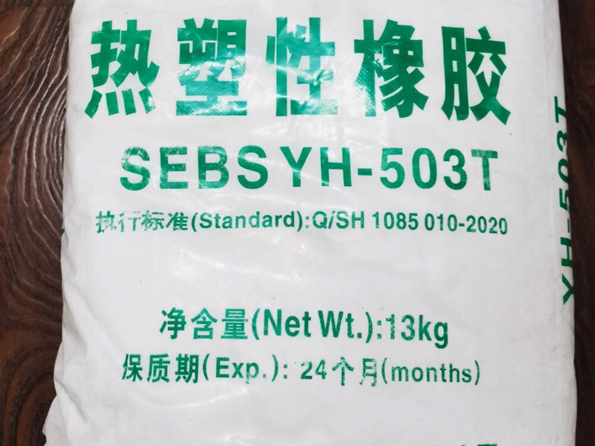
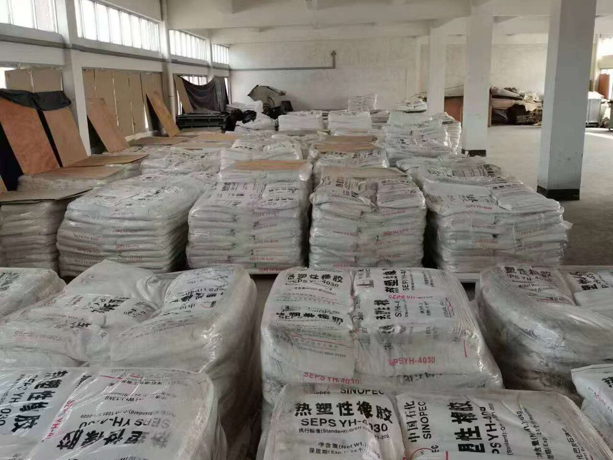

01 / SYNTHETIC RUBBER
合成ゴム
用途に応じた各種グレードをご提案します。代表的な形状は白色の多孔質粒状で、複数の包装形態に対応します。
主な構造線状・ラジアルブロック共重合体
包装例15/20kg袋、トンバッグ等
品質対応ISO / REACH 等
CHEMICAL PRODUCTS
用途と品質要件に合わせた、信頼できる製品提案。
PRODUCT LINEUP
用途に応じた各種グレードをご提案します。代表的な形状は白色の多孔質粒状で、複数の包装形態に対応します。

車両、機械設備、産業用途など、使用条件に合わせた潤滑製品をご案内します。性能、粘度、使用環境を確認し、適切な製品を選定します。

PRODUCT INQUIRY